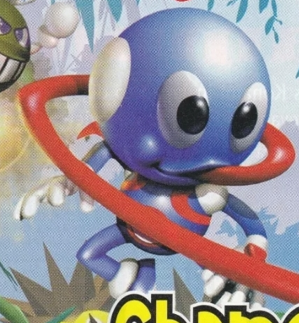

Davy the Chameleon
Authors: Nathan R.
"Everyone likes to get a bit of tongue now and then, but problably not from the hero of Chameleon Twist."
—64 Magazine, Paragon Publishing[1]
|

Render of Davy from the Chameleon Twist box art. |
| Davy |
|---|
|
Species:
Chameleon / Anthromorph
This entry has
pre-release media!
.
|
{kind=link}
Davy, while not the main protagonist, is one of four others in and the poster child of Chameleon Twist.
Davy was originally an ordinary blue chameleon. However, after jumping into a pot of unknown power and origin, he gained the ability to have opposable thumbs. Strangely, his tongue was kept more or less the same.
Not many solid credits exist for the creation of Davy (as is the rest of Chameleon Twist), but Tadashi Ohya is credited for the original chameleon design[2], and therefore Davy in the process. Furthermore, there are 5 artists credited in the art direction of Chameleon Twist. These are, in order of appearance; Takashi Makino, Yuki Tamura, Hiroyuki Morioka, Mitsuyasu Nomoto, and Hideki Shibagaki.[2] Given that the first three names are credited towards Computer Arts and the last two are credited towards Graphic Arts, it can be safely assumed that Mitsuyasu Nomoto and Hideki Shibagaki had some input for the chameleons' designs.
-
1Creation
- 1.1Incarnations
- 1.2Final
- 1.3The Sequel
- 2Trivia
Creation
Incarnations
Throughout the development of Chameleon Twist, there was only one constant: Davy and his body. While technically not verbatim, Davy and his design has seen Chameleon Twist from its humble beginnings to its own bitter end. The first iteration of Davy documented is an extremely primative design made up of nothing but spheres and cylinders. Sadly, only his backside can be seen in the currently available screenshots. There has not been a screenshot yet of Davy's face in these intial test demos. From what is seen, it seems as if Davy has either a saddened, Fred-esque look, or resting grouch face. Regardless of the interpretation, his eyes are half shut. Even worse, we don't even get to see his pupils! Notable missing features other than what was just mentioned include lack of cheeks, backpack, skin markings, shoulder cuffs, and shoe cuffs. Notable differences include the shoes being fully white. Other than these differences, that's the dude we all know and love. In the flesh.
The next notable incarnation is a singluar screenshot of the supposed 'battle mode'. The design, assuming that is indeed our beloved Davy, is near identical to the first iteration. The key difference is that this chameleon is nothing but blue! This can be presumedly because of battle mode being color coded. The only other notable difference is that the other player's tongue is more sharp and jagged. It can assumed that this applies to Davy as well.
The next iteration in our list is ANOTHER lone screenshot. This time of a scrapped water-based section. Here, the design starts to meld into the limitations of the Nintendo 64. The model becomes jagged and sharp. The infamous backpack is now included as well as cuffs! Hooray! Still no cheeks or body markings yet, but that's him!
This design can be most commonly seen in the Space World 1996 build that was shown off. We can now clearly see his eyes, the cuff colors were swapped, and he now has genuine gloves instead of flesh hands. He even has his 'iconic' 2 plastered on his chest. With cheeks to boot, this design looks near identical model wise to the previous, much like how the second Demo Davy looked similar to the first. However, in this case, we actually get to see the design in action! The actions performed inside of the Space World 1996 build looks pretty similar to what was in the final release, minus some battle mode shenanigans and the Mega-Vault. We are getting there!
This last beta iteration is like a mid-point between the final and the Space World 1996 build. In fact, it closely resembles the low-poly versions used in Battle Game. The eye texture seems to be ripped directly from the Space World 1996 build. The backpack straps are visible, and the shoes seem to be made up of two colors. One detraction however is that the hands are now flat colors, suggesting that they are either mere textures or that the lighting was REALLY subdued. This is taken from Hideyuki Nakanishi's biography page[3]. Said image also contains an early version of Ant Land. There are very minor changes, but it looks as if we are nearing the final build.
Final
And here we are! This is Davy's model ripped straight from the game! It contains nearly no trace of the old models. It is overall a graphical upgrade, so one can imagine that they prioritized their designs last to fit within memory constraints, and they did a knock-up job! Here is a list of all the differences from the last:
This one is generally for fun, and there are other models not included in this list. However, this is one of the many renders people use / know Chameleon Twist by. Because of this fact, let's break it down!
The Sequel
Amazingly, the series was greenlit for a second go-round. Here, the chameleons got... interesting overhauls. On the Japanese side, they look teh same as ever! Maybe they got a couple more polygons and 10$ more in shading, but at the cost of their number. Oh the horror!
ARGH!!! REAL CHAMELEONS!!
It's unknown why, how or when this change got finalized, but it was largely considered a bad move by many. Whether it was a choice by SUNSOFT or internally at Japan System Supply, Davy now has a proper mouth! Anatomy be damned.
Trivia
Profile
Currently no documented manuals of the Japanese versions exist. If you have any insight to the whereabouts/if they exist, please reach out! But for now...
The validity of these facts are shaky at best, but it is fun trivia from the manuals, so why not. Starting with the manual for Chameleon Twist...
Davy is a scaly reptile of about 60cm in length, with an extremely long tongue that rolls and unrolls. He shoots out his tongue and picks up insects with the sticky end when he's hungry.
—ESI, Chameleon Twist Manual[1]
This is how Davy changes after he finds himself in the land of Wonder.
Height: 15 tongues
Tongue Length: 160 tongues (measured when unrolled)
Characteristcs: Moves and attacks using his tongue. Head swells up and moves more slowly when he licks up lots of enemies.
—ESI, Chameleon Twist Manual[1]
ARGH!!! REAL CHAMELEONS!!
It's unknown why, how or when this change got finalized, but it was largely considered a bad move by many. Whether it was a choice by SUNSOFT or internally at Japan System Supply, Davy now has a proper mouth! Anatomy be damned.